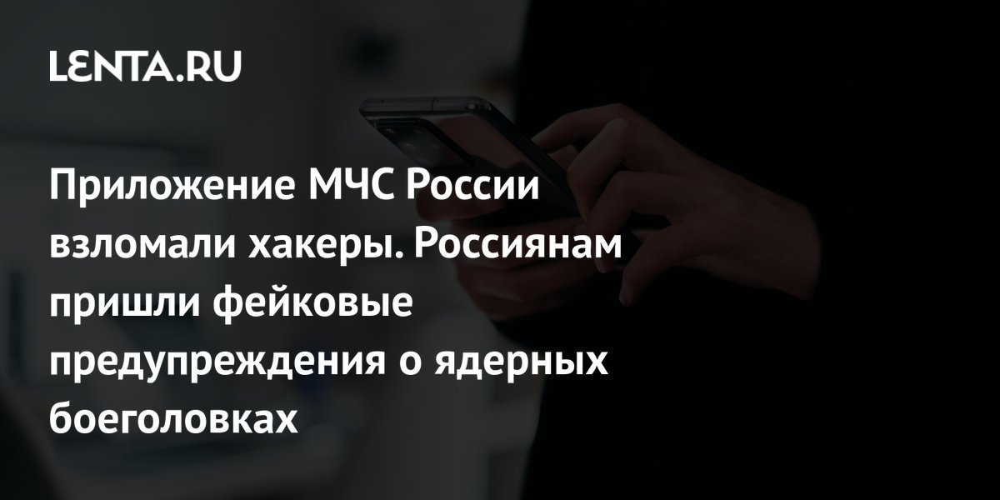

По сообщению самого МЧС, мобильное приложение ведомства подверглось массированной кибератаке: злоумышленникам удалось получить возможность вести рассылку от имени официальных каналов. Примерно в 02:45 по Москве в Telegram-каналах МЧС и РСЧС, в приложении ведомства и на страницах региональных оперштабов одновременно появились ложные «тревоги»: по России якобы нанесён удар ядерными боеголовками на носителях «P1-SUN», а населению предлагалось закупить продукты на три недели и спускаться в подвалы. Публикации заметили как минимум в девяти субъектах — от Петербурга и Московской области до Башкортостана.
Официальный Telegram-канал МЧС России (сообщение от 2 ноября) заявил, что система оповещения населения функционирует в штатном режиме: взлом мобильного приложения «не оказал и не может оказывать влияния» на неё, потому что оповещение идёт через отдельные каналы — региональные и муниципальные системы (сирены, громкоговорители), СМС-рассылку, теле- и радиовещание. Приложение названо «лишь дополнительным вспомогательным сервисом». Ведомство ведёт работы по закрытию уязвимости и восстановлению приложения и призвало доверять только официальным источникам.
По данным Газеты.Ru, атака на российские ресурсы стала зеркальной: в ту же ночь взломали украинское приложение «Воздушная тревога», которое рассылает оповещения о воздушной тревоге, — там пользователи также получили ложные сообщения. Пока это версия СМИ: официальных уведомлений с чьей-либо стороны об ответственности за атаку не публиковалось, и технических деталей эксплойта никто не раскрывал.
Инцидент — учебник по главному правилу критичных сервисов: канал доставки уведомлений (приложение, мессенджер) — это поверхность атаки, а не источник истины. Именно поэтому ГОСТ-овская система оповещения исторически идёт «железом» — сирены, громкоговорители, СМС через операторов, а не только через мобильный клиент, который можно угнать вместе с аккаунтом.
Тревогу считать подтверждённой, только если её дублируют минимум два независимых канала: официальные сайты и соцаккаунты ведомства, СМС от оператора, ТВ/радио. Сообщение только в одном приложении или Telegram-канале, тем более с требованием «немедленно» что-то делать, — повод проверить, а не паниковать. До восстановления приложения МЧС перенастройте уведомления через сайт mchs.gov.ru и официальные региональные каналы, а подозрительные рассылки с ссылками не открывайте: на волне паники классически раскручивается фишинг.